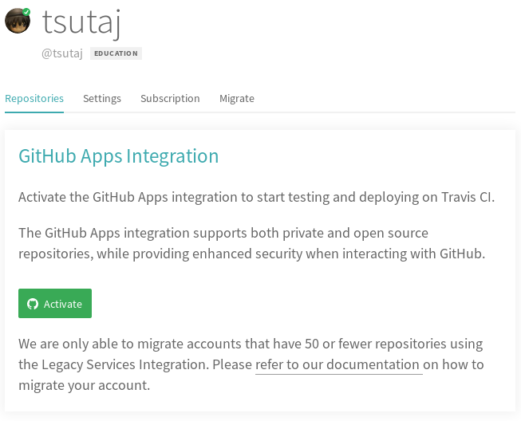
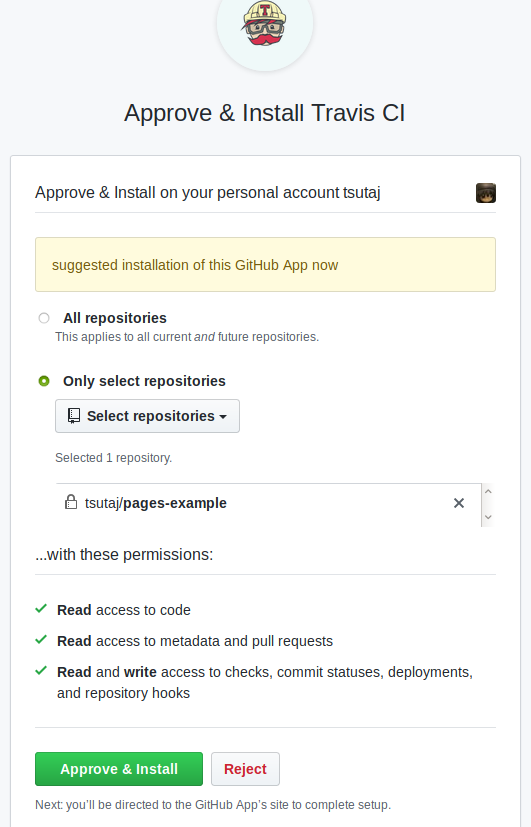
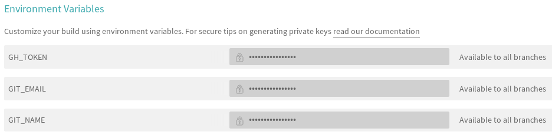

Competitive Programming Advent Calendar 2019 用のリポジトリ
突然ですが、以下の「ここをクリック」と書かれている箇所をクリックしてみてください。隠されていたコンテンツが表示されるようになるはずです。
この機能は Jekyll に備わっている機能ではなく、自分で追加したプラグインによって実現されています (このプラグインは Adding support for HTML5’s details element to Jekyll に記載されている内容を参考に作成されたものです)。このように、Jekyll は自分の手で機能を拡張することができます。
しかし、セキュリティの観点から GitHub Pages では自分で追加したプラグインをビルドできません。これでは困るので、CI (継続的インテグレーション) を活用して自作のプラグインも使えるようにしてみましょう。
以下で説明されている内容は jekyll-travis の README を基に作成されており、本リポジトリ内の .travis.yml や Rakefile 等のファイルは jekyll-travis リポジトリから拝借したものです。詳細な説明がほしい方はこちらのリポジトリの README をご覧ください。また、プラグインの具体的な作成方法については プラグイン | Jekyll に委ねますので参考にしてください。
まず、Travis CI へアクセスして、自分が利用している GitHub アカウントの情報をもとに登録を済ませてください。
登録したての状態で Travis CI の Dashboard に行くと、「GitHub Apps Integration」と出ているはずです。緑の「Activate」というボタンをクリックします。

すると、どのリポジトリに Travis CI をインストールするか聞かれます。CI を適用したいリポジトリが含まれるように選択し、「Approve & Install」をクリックします。

これで Travis CI のインストールは完了です。Dashboard にリポジトリが表示されるようになったと思いますので、リポジトリを選択してリンク先に飛び、「More Oprions → Settings」をクリックします。すると、Environment Variables (環境変数) を設定する項目がありますので、以下を入力します。DISPLAY VALUE IN BUILD LOG にチェックを入れないように注意してください。
GIT_NAME (GitHub アカウント名)GIT_EMAIL (アカウント名に紐付けられているメールアドレス)GH_TOKEN (Personal Access Token)
repo のみでよいです。
これで、Travis CI を利用する準備ができました。
Sample 1 まででは GitHub Pages が勝手にビルドしてくれていましたので master ブランチにあるものをそのままビルドさせていましたが、今回は GitHub Pages のビルド機能は使わずに CI を利用して自分でビルドさせます。生成元と生成先のブランチは異なるほうが嬉しいため、今回は master ブランチに Markdown ファイルを置き、その内容を gh-pages ブランチにビルド させることにしましょう。
Sample 1 では生成元ブランチを master にしていましたが、これを gh-pages ブランチに変更します。gh-pages ブランチを生成したら、Sample 1 における生成元ブランチの設定と同様に、gh-pages ブランチを代わりに生成元ブランチとして指定します。
また、Sample 1 のときと同様に_config.yml は適宜自分の情報に差し替えてください。特に、CI を用いたビルドにおいて Rakefile 上で以下の変数を使用しますので、必ず設定を変更してください。
username: tsutaj # 自分の GitHub ユーザー名
repo: pages-example # リポジトリ名
destination: _site/ # 基本的にいじる必要はないです
Sample 1 で sample_002.md を exclude していた方は、再びその行をコメントアウトすることを忘れないでください。ここまで操作しましたら、master ブランチに push します。gh-pages ブランチへの push は Rakefile 等が Travis CI 上で自動でやってくれます。
$ git add [files]
$ git commit -m "add pages files"
$ git push origin HEAD
うまくいけば、master ブランチに push したものが gh-pages ブランチにビルドされるはずです。